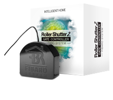
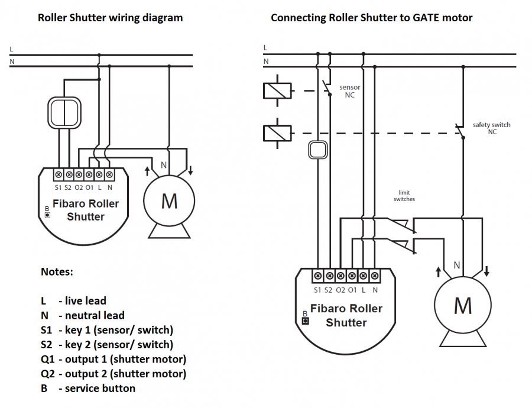

FIB_FGRM-222
Firmware Version : 22.22 |
 |
Quick StartA This device is a Z-Wave Actuator. To include the device into the network, turn the controller into the inclusion mode and then triple click the B-button or a push button connected to the S1 terminal. Further you can use the auto-inclusion mode by setting the controller into the inclusion mode and then connect voltage supply. Please refer to the chapters below for detailed information about all aspects of the products usage. |
Product description
The Fibar Insert Motor Control FGRM-222 allows controlling motors for jalousies, blinds or other single-phase AC devices both wirelessly via Z-Wave and locally utilizing a traditional wall switch. Additionally to the Fibaro Blind Control Insert 1 (FGR-221) this device allows the control of garage doors and measuring the current and power consumption for the controlled devices and itself. This insert enables a precise positioning of motors with mechanical and electrical limit switch. In addition, this device has a power monitoring.
The device is placed in a wall box right behind the normal switch. The switch is not longer directly connected to the load but acts as input device for the Fibar insert that is controlling the load. The solution works with all switch design with or without neutral position as long as there is enough space in the wall box behind the switch. The device is just 15 mm height. The available space depends on the size of the traditional switch, the dimensions of the wall box and the amount of additional cabling placed in this box. This device is designed for a 3 wire system and needs a neutral wire in the wall box.
Installation Guidelines
The motor control insert is designed to fit into standard circular European wall boxes with 60 mm diameter. With its 15 mm height, it can be also mounted behind traditional wall switches. This wall switch serves as an external control switch to controll loads. The relays are realized in the insert.
The inserts contacts N and L are connected directly with the mains distribution of the power network. The three wires of the motor are connected like shown in the figure below.

The motor control can be operated locally using a switching paddle installed on the wall box. To connect the switching paddle with the insert it has to be connected with the insert contacts S1, S2.
Attention: There must not be mains-power connected to the insert contacts. This would immediately lead to a destruction of the insert.
The local operation can be realized by a double switching paddle (bistable) or a double button (monostable). The connected switch type must be selected according to the inclusion by setting the configuration parameter 14. The local switch is connected with the motor control insert as shown in the schematics. If a bistable switch is connected it has to stay connected until the motor control insert is included into the Z-Wave network.
The Blind Control Insert 2 can also be used to control a Gate motor. Therefore it is necessery to install an additional safety switch NC and an sensor NC like shown in the figure.
Attention: The switch insert has an automatic endposition identification. This requires that the insert is connected with a tube motor with endposition switches. A test operation without motor leads to a wrong behavior.
It may be necessery to calibrate the module, when it's not working properly. The Calibration is a process during which a Roller Shutter learns the position of the limit switches and a motor characteristic. The procedure consists of an automatic, full movement between the limit switches (up, down, and up again). There are different procedures of calibrating a Fibaro Roller Shutter.
Calibration:
Calibration through the Z-Wave network
- Make sure the module is connected to the power supply.
- Include the module into the Z-Wave network according to the inclusion procedure.
- Set the parameter 29 value to 1.
- Roller Shutter performs the calibration process, completing full cycle - up, down and up again.
- The parameter 29 value will be automatically set to 0.
- Using an interface test whether the positioning works correctly.
Calibration through the switch keys
- Make sure the module is connected to the power supply and to the switch keys as well (S1 and S2 inputs).
- Include the module into the Z-Wave network according to the inclusion procedure.
- Press and hold the switch key connected to S1 or S2 input terminal and release it after at least 3 seconds.
- Press and hold the same switch key again, and release it after 3 seconds.
- Now press and hold the same button, for 3 seconds, for the 3rd time.
- After pressing and releasing the button for the third time, automatic calibration sequence will start.
- Roller Shutter performs the calibration process, completing full cycle - up, down and up again.
Calibration through Menu (B-button)
- Make sure the module is connected to the power supply.
- Include the module into the Z-Wave network according to the inclusion procedure.
- Press and hold the B-button for ca. 6 seconds.
- LED will glow blue.
- Release the B-button and press it again, briefly.
- Roller Shutter performs the calibration process, completing full cycle - up, down and up again.
CALIBRATING LAMELLAS POSITIONING IN VENETIAN BLINDS
Apart from calibrating the roller blind position, it’s possible to calibrate the position of venetian blinds lamellas, in connection with a Fibaro Home Center 2. After correct calibration, in case of venetian blinds, it’s possible to set the position between the limit switches, as well as the lamellas angle. By default, time of full turn of the lamellas is set to 1,5 seconds. If necessary, it can be modified following below instructions.
- Make sure the module is connected to the power supply.
- Include the module into the Z-Wave network according to the inclusion procedure.
- Calibrate the Roller Shutter according to the instructions above.
- Set the parameter 10 value to 2 or choose in HC2 interface: Device Type - Venetian Blind
- Another device icon, responsible for lamellas operation, will show up in Home Center 2 interface. In case of any other Z-Wave network controllers managing the lamellas position is achieved through pressing and holding a switch key (up or down).
- By default, time of transition between extreme positions is set to 1.500 ms (1,5 seconds).
- Turn lamellas between extreme positions. If after full cycle a blind starts moving up or down, then parameter’s 12 value must be modified, e.g. to 1.000ms (1 second). Correctly configured lamellas should not force the blind to move up or down.
Behavior within the Z-Wave network
I On factory default the device does not belong to any Z-Wave network. The device needs to join an existing wireless network to communicate with the devices of this network. This process is called Inclusion. Devices can also leave a network. This process is called Exclusion. Both processes are initiated by the primary controller of the Z-Wave network. This controller will be turned into exclusion respective inclusion mode. Please refer to your primary controllers manual on how to turn your controller into inclusion or exclusion mode. Only if the primary controller is in inclusion or exclusion mode, this device can join or leave the network. Leaving the network - i.e. being excluded - sets the device back to factory default.
If the device already belongs to a network, follow the exclusion process before including it in your network. Otherwise inclusion of this device will fail. If the controller being included was a primary controller, it has to be reset first.
To include the device into the network, turn the controller into the inclusion mode and then triple click the B-button or a push button connected to the S1 terminal. Further you can use the auto-inclusion mode by setting the controller into the inclusion mode and then connect voltage supply. The device is now ready to work.
Operating the device
The Fibaro Blind Control Insert 2 has different operating modes. Each operating mode affects certain parameters settings:
- Roller blind without positioning (parameter 10 set to 0).
- Roller blind with positioning (parameter 10 set to 1).
- Venetian blind (parameter 10 set to 2; parameter 13, set to 2).
- Gate without positioning (parameter 10 set to 3; parameter 12 set to 0; parameter 17 set to 0).
- Gate with positioning (parameter 10 set to 4; parameter 12 set to 0; parameter 17 set to 0).
After chosing the operation mode the Fibaro Blind Control Insert 2 can be controlled with the Fibaro Home Center 2 or any other Z-Wave Primary Controller. Fibaro Roller Shutter allows for connecting push buttons to S1 and S2 terminals. These may be momentary or toggle switches, alternatively. Push buttons are responsible for managing the blind’s movement.
Using momentary switches:
Clicking UP button connected to S1 terminal, initiates up movement. Clicking button connected to S2 terminal, initiates down movement.
If the blind is moving, each click, of any button, will stop the movement. In addition a button click sends a command frame to I-st association group devices. In case of venetian blinds, it’s possible to manage the lamellas angle. Operating Mode - Venetian Blind, or Parameter 10 value set to 2.
Holding connected to S1 terminal initiates lamellas rotation up. Holding connected to S2 terminal initiates lamellas rotation down. In addition a button hold sends a Fibar Command Class control frame to II-nd association group devices.
Using toggle switches:
Changing switch key position, connected to S1 terminal, initiates up movement. Changing switch key position, connected to S2 terminal, initiates down movement. Choosing a middle position stops the blind.
Associations
A Z-Wave devices control other Z-Wave devices. The relationship between one device controlling another device is called association. In order to control a different device, the controlling device needs to maintain a list of devices that will receive controlling commands. These lists are called association groups and they are always related to certain events (e.g. button pressed, sensor triggers, ...). In case the event happens all devices stored in the respective association group will receive a common wireless command.
Association Groups:
| 1 | triggered through a momentary switch click or a toggle switch position change (max. nodes in group: 16) |
| 2 | triggered through a momentary switch hold (max. nodes in group: 16) |
| 3 | reports the module status; default setting primary controller (max. nodes in group: 1) |
Configuration Parameters
Z-Wave products are supposed to work out of the box after inclusion, however certain configuration can adapt the function better to user needs or unlock further enhanced features.
IMPORTANT: Controllers may only allow to configure signed values. In order to set values in the range 128 … 255 the value sent in the application shall be the desired value minus 256. For example: to set a parameter to 200 it may be needed to set a value of 200 minus 256 = minus 56. In case of two byte value the same logic applies: Values greater than 32768 may needed to be given as negative values too.
| Value | Description |
|---|---|
| 0 | 0 - no protection. Roller Shutter responds to push buttons. (Default) |
| 1 | 1 - not supported. |
| 2 | 2 - Local protection active. Roller Shutter does not respond to push buttons. |
| Value | Description |
|---|---|
| 0 | 0 – No protection. Roller Shutter responds to command frames. (Default) |
| 1 | 1 - RF Protection active. Roller Shutter does not respond to the Z-Wave control frames. |
| 2 | 2 - not supported. |
| Value | Description |
|---|---|
| 0 | 0 – Blind position reports sent to the main controller using Z-Wave Command Class. (Default) |
| 1 | 1 - Blind position reports sent to the main controller using Fibar Command Class. |
| Value | Description |
|---|---|
| 0 | 0 - Roller Blind Mode, without positioning |
| 1 | 1 - Roller Blind Mode, with positioning (Default) |
| 2 | 2 - Venetian Blind Mode, with positioning |
| 3 | 3 - Gate Mode, without positioning |
| 4 | 4 - Gate Mode, with positioning |
| Value | Description |
|---|---|
| 32769 — 32767 | Value 0 means the gate will not close automatically. |
| Value | Description |
|---|---|
| 0 | 0 - Lamellas return to previously set position only in case of the main controller operation. |
| 1 | 1 - Lamellas return to previously set position in case of the main controller operation, momentary switch operation, or when the limit switch is reached. (Default) |
| 2 | 2 - Lamellas return to previously set position in case of the main controller operation, momentary switch operation, when the limit switch is reached or after receiving a “STOP” control frame (Switch Multilevel Stop). |
| Value | Description |
|---|---|
| 0 | 0 - Momentary switches (Default) |
| 1 | 1 - Toggle switches |
| 2 | 2 - Single, momentary switch. (The switch should be connected to S1 terminal) |
| Value | Description |
|---|---|
| 129 — 127 | value 10 = 1s. In Gate Mode, time to turn off the Roller Shutter relays after reaching a limit switch is set to 3 seconds and cannot be modified. Value of 0 means the gate will note close automatically. |
| Value | Description |
|---|---|
| 129 — 127 | The value of 0 means reaching a limit switch will not be detected. |
| Value | Description |
|---|---|
| 32769 — 32767 | value of 0 means the function is disabled. |
| Value | Description |
|---|---|
| 0 | 0 - deactivated (value 0 is automatically set after calibration process) (Default) |
| 1 | 1 - Start calibration process |
| Value | Description |
|---|---|
| 0 | 0 - No reaction. |
| 1 | 1 - Open blind. |
| 2 | 2 - Close blind. (Default) |
| Value | Description |
|---|---|
| 0 | 0 - No reaction. (Default) |
| 1 | 1 - Open blind. |
| 2 | 2 - Close blind. |
| Value | Description |
|---|---|
| 0 | 0 - No reaction. |
| 1 | 1 - Open blind. (Default) |
| 2 | 2 - Close blind. |
| Value | Description |
|---|---|
| 0 | 0 - No reaction. |
| 1 | 1 - Open blind. (Default) |
| 2 | 2 - Close blind. |
| Value | Description |
|---|---|
| 0 | 0 - Do not change lamellas position - lamellas return to the last set position. |
| 1 | 1 - Set lamellas to their extreme position. (Default) |
| Value | Description |
|---|---|
| 1 — 100 | Value of 0 means the reports are turned off. (Default 10) |
| Value | Description |
|---|---|
| 32769 — 32767 | Value of 0 means the reports are turned off. |
| Value | Description |
|---|---|
| 130 — 127 | Value of 0 means the reports are turned off. |
| Value | Description |
|---|---|
| 0 | 0 - Self-measurement inactive. (Default) |
| 1 | 1 - Self-measurement active. |
| Value | Description |
|---|---|
| 0 | 0 - Associations activation (Default) |
| 1 | 1 - Scenes activation |
Technical Data
| Power Supply | 230V ~50-60 Hz |
| Attachable Loads | 1 kW |
| IP Rating | 20 |
| Explorer Frame Support | Yes |
| SDK | 4.55 |
| Device Type | Slave with routing capabilities |
| Generic Device Class | Multilevel Switch |
| Specific Device Class | Motor Control Class B |
| Routing | Yes |
| FLiRS | No |
| Firmware Version | 22.22 |